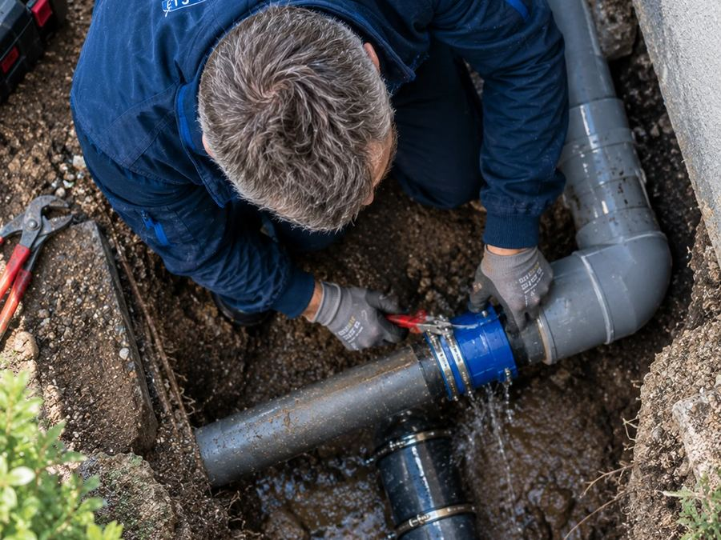

1 an
Garantie de parfait achèvement
Tous les désordres signalés lors de la réception ou apparus dans l'année qui suit, quelle que soit leur importance. Nous revenons les reprendre à nos frais.
Article 1792-6 du Code civil
Chaque intervention d'ETS-BZH est couverte. Voici précisément par quoi, pendant combien de temps, et ce que cela change pour vous en cas de problème.
Elles ne se substituent pas les unes aux autres : elles se cumulent et couvrent des risques différents.
Tous les désordres signalés lors de la réception ou apparus dans l'année qui suit, quelle que soit leur importance. Nous revenons les reprendre à nos frais.
Article 1792-6 du Code civil
Les éléments d'équipement dissociables de l'ouvrage : chauffe-eau, robinetterie, radiateurs, VMC, interphone, volets roulants, appareillage électrique.
Article 1792-3 du Code civil
Les dommages qui compromettent la solidité de l'ouvrage ou le rendent impropre à sa destination : infiltration, rupture de canalisation encastrée, défaut d'étanchéité, installation électrique dangereuse.
Articles 1792 et suivants du Code civil
Les dommages que nous pourrions causer à vos biens ou à des tiers pendant le chantier : dégât des eaux provoqué, matériel abîmé, préjudice au voisinage.
Obligation d'assurance — article L.241-1 du Code des assurances
| Garantie | Durée | Point de départ | Référence légale |
|---|---|---|---|
| Garantie de parfait achèvement | 1 an | à compter de la réception des travaux | Article 1792-6 du Code civil |
| Garantie de bon fonctionnement | 2 ans | à compter de la réception des travaux | Article 1792-3 du Code civil |
| Garantie décennale | 10 ans | à compter de la réception des travaux | Articles 1792 et suivants du Code civil |
| Responsabilité civile professionnelle | Permanente | pendant toute l'intervention | Obligation d'assurance — article L.241-1 du Code des assurances |
ETS-BZH est assurée en responsabilité civile professionnelle et en garantie décennale pour l'ensemble de ses activités : plomberie, dégorgement et assainissement, électricité et canalisations, sur les quatre départements bretons.
Assurée auprès de
MIC Insurance
L'attestation d'assurance conforme au modèle réglementaire (arrêté du 5 janvier 2016) vous est remise avant le démarrage des travaux, et à tout moment sur simple demande.
Indépendamment des garanties légales ci-dessus, les pièces que nous posons bénéficient de la garantie du fabricant, et notre main-d'œuvre est garantie. Un dépannage qui ne tient pas est repris sans facturation nouvelle : c'est la contrepartie normale d'un diagnostic correctement posé.
Par honnêteté, autant l'écrire : aucune garantie ne couvre l'usure normale, un défaut d'entretien, une intervention réalisée par un tiers après notre passage, ni un désordre dont la cause est antérieure et étrangère à nos travaux. Dans ce dernier cas, nous vous remettons un constat écrit qui vous servira auprès de votre assurance.

photos/plomberie-3.jpg
Par téléphone au 02 20 06 00 75 ou par e-mail à contact@etablissement-breizh.fr. Réponse sous 24 h ouvrées.
Le titre d'artisan est protégé en France : il suppose une qualification professionnelle et une inscription au Répertoire des Métiers.

Savoir-faire artisanal reconnu et travail réalisé par des professionnels du métier.

Entreprise artisanale inscrite au Répertoire des Métiers.
Devis gratuit, tarif validé avant travaux, attestation d'assurance fournie avant le démarrage du chantier.
02 20 06 00 75Ligne directe · 24h/24 et 7j/7 · Devis gratuit sans engagement
Réponse sous 30 minutes ouvrées
Artisan qualifié, assuré et garanti
Garantie décennale, garantie de parfait achèvement et responsabilité civile professionnelle sur chacune de nos interventions.
Nos assurances & garanties →